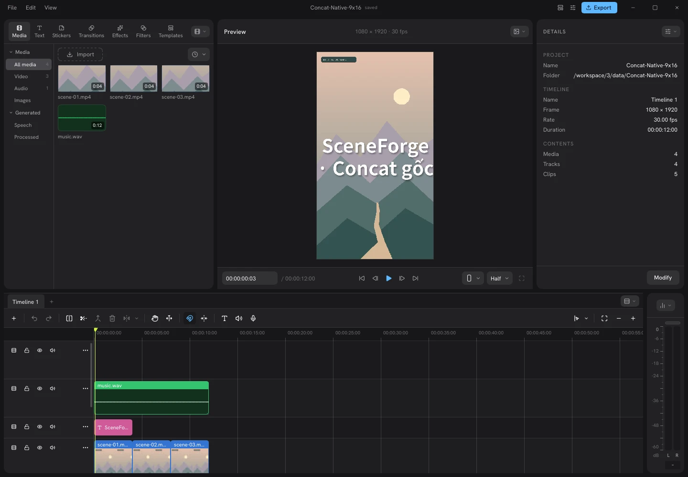

Xem thử trình dựng Concat gốc
Khám phá các bảng công cụ từ cửa sổ đã build và chạy thật.
Bấm các tab hoặc clip được đánh dấu trong hình

Xem trước 9:16
Video mẫu · 9:1600:00.00
Chữ là lớp xem trước. Tệp SRT chứa nội dung và thời gian; ASS giữ thêm kiểu chữ để ghép vào video bằng trình dựng.
Chỉnh phụ đề
Bấm số câu để xem đoạn đó. Thời gian tính bằng giây; các câu không chồng lên nhau.
Bản chữ được lưu trên trình duyệt này.
Thời gian
▣ Video
T Phụ đề
Phụ đề mẫu / nhập tệp · Chưa nhận giọng nói tự động · Chưa xuất MP4 có chữ trên web. Video mở cục bộ trên thiết bị.
Tư liệu
Video quay cửa sổ Concat đang chạy
Mở các bảng công cụ, chọn clip video / chữ / nhạc và xem bảng xuất. Quay từ bản tự build, không dựng lại giao diện.
KẾT QUẢ TỪ ENGINE THẬT
Ba cảnh. Một video dọc.
MP4 mẫu đã được xuất bởi engine Concat, gồm video, tiêu đề và nhạc minh họa.
- Khung hình
- 1080 × 1920 · 9:16
- Thời lượng
- 12 giây
- Hình ảnh / âm thanh
- H.264 / AAC
Đây là kết quả mẫu đã xuất, không phải tác vụ render mới khi bạn bấm phát.